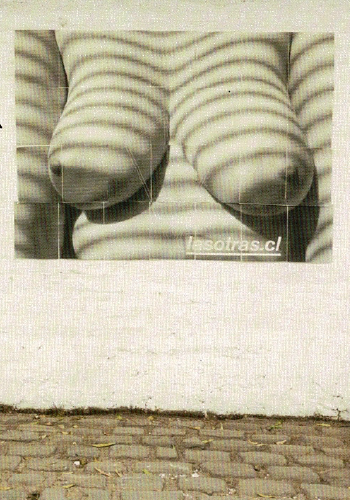
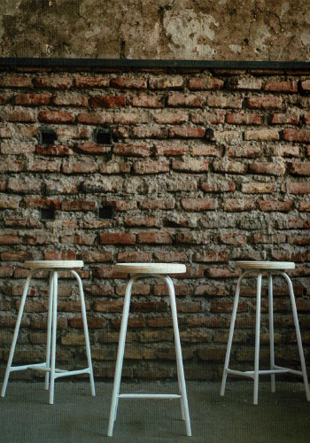

Sofía Dannemann
Las otras: Diseño activista y disidencia femenina
Ver artículo

Isidora Hernández - Catalina Troncoso
La vianda
Ver artículo

Nicolás Hormazábal
Estudio Prado: El hacer cotidiano y la importancia del error en el eterno ejercicio de pensar nuevas soluciones
Ver artículo